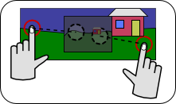

QPinchGesture¶
Note
This class was introduced in Qt 4.6.
Synopsis¶
Functions¶
- def
centerPoint() - def
changeFlags() - def
lastCenterPoint() - def
lastRotationAngle() - def
lastScaleFactor() - def
rotationAngle() - def
scaleFactor() - def
setCenterPoint(value) - def
setChangeFlags(value) - def
setLastCenterPoint(value) - def
setLastRotationAngle(value) - def
setLastScaleFactor(value) - def
setRotationAngle(value) - def
setScaleFactor(value) - def
setStartCenterPoint(value) - def
setTotalChangeFlags(value) - def
setTotalRotationAngle(value) - def
setTotalScaleFactor(value) - def
startCenterPoint() - def
totalChangeFlags() - def
totalRotationAngle() - def
totalScaleFactor()
Detailed Description¶
The
PySide2.QtWidgets.QPinchGestureclass describes a pinch gesture made by the user.A pinch gesture is a form of touch user input in which the user typically touches two points on the input device with a thumb and finger, before moving them closer together or further apart to change the scale factor, zoom, or level of detail of the user interface.
For an overview of gesture handling in Qt and information on using gestures in your applications, see the Gestures in Widgets and Graphics View document.
Instead of repeatedly applying the same pinching gesture, the user may continue to touch the input device in one place, and apply a second touch to a new point, continuing the gesture. When this occurs, gesture events will continue to be delivered to the target object, containing an instance of
PySide2.QtWidgets.QPinchGesturein theQt.GestureUpdatedstate.
-
class
PySide2.QtWidgets.QPinchGesture([parent=nullptr])¶ Parameters: parent – PySide2.QtCore.QObject
-
PySide2.QtWidgets.QPinchGesture.ChangeFlag¶ This enum describes the changes that can occur to the properties of the gesture object.
Constant Description QPinchGesture.ScaleFactorChanged The scale factor held by PySide2.QtWidgets.QPinchGesture.scaleFactor()changed.QPinchGesture.RotationAngleChanged The rotation angle held by PySide2.QtWidgets.QPinchGesture.rotationAngle()changed.QPinchGesture.CenterPointChanged The center point held by PySide2.QtWidgets.QPinchGesture.centerPoint()changed.
-
PySide2.QtWidgets.QPinchGesture.centerPoint()¶ Return type: PySide2.QtCore.QPointF
-
PySide2.QtWidgets.QPinchGesture.changeFlags()¶ Return type: PySide2.QtWidgets.QPinchGesture.ChangeFlags
-
PySide2.QtWidgets.QPinchGesture.lastCenterPoint()¶ Return type: PySide2.QtCore.QPointF
-
PySide2.QtWidgets.QPinchGesture.lastRotationAngle()¶ Return type: PySide2.QtCore.qreal
-
PySide2.QtWidgets.QPinchGesture.lastScaleFactor()¶ Return type: PySide2.QtCore.qreal
-
PySide2.QtWidgets.QPinchGesture.rotationAngle()¶ Return type: PySide2.QtCore.qreal
-
PySide2.QtWidgets.QPinchGesture.scaleFactor()¶ Return type: PySide2.QtCore.qreal
-
PySide2.QtWidgets.QPinchGesture.setCenterPoint(value)¶ Parameters: value – PySide2.QtCore.QPointF
-
PySide2.QtWidgets.QPinchGesture.setChangeFlags(value)¶ Parameters: value – PySide2.QtWidgets.QPinchGesture.ChangeFlags
-
PySide2.QtWidgets.QPinchGesture.setLastCenterPoint(value)¶ Parameters: value – PySide2.QtCore.QPointF
-
PySide2.QtWidgets.QPinchGesture.setLastRotationAngle(value)¶ Parameters: value – PySide2.QtCore.qreal
-
PySide2.QtWidgets.QPinchGesture.setLastScaleFactor(value)¶ Parameters: value – PySide2.QtCore.qreal
-
PySide2.QtWidgets.QPinchGesture.setRotationAngle(value)¶ Parameters: value – PySide2.QtCore.qreal
-
PySide2.QtWidgets.QPinchGesture.setScaleFactor(value)¶ Parameters: value – PySide2.QtCore.qreal
-
PySide2.QtWidgets.QPinchGesture.setStartCenterPoint(value)¶ Parameters: value – PySide2.QtCore.QPointF
-
PySide2.QtWidgets.QPinchGesture.setTotalChangeFlags(value)¶ Parameters: value – PySide2.QtWidgets.QPinchGesture.ChangeFlags
-
PySide2.QtWidgets.QPinchGesture.setTotalRotationAngle(value)¶ Parameters: value – PySide2.QtCore.qreal
-
PySide2.QtWidgets.QPinchGesture.setTotalScaleFactor(value)¶ Parameters: value – PySide2.QtCore.qreal
-
PySide2.QtWidgets.QPinchGesture.startCenterPoint()¶ Return type: PySide2.QtCore.QPointF
-
PySide2.QtWidgets.QPinchGesture.totalChangeFlags()¶ Return type: PySide2.QtWidgets.QPinchGesture.ChangeFlags
-
PySide2.QtWidgets.QPinchGesture.totalRotationAngle()¶ Return type: PySide2.QtCore.qreal
-
PySide2.QtWidgets.QPinchGesture.totalScaleFactor()¶ Return type: PySide2.QtCore.qreal
© 2018 The Qt Company Ltd. Documentation contributions included herein are the copyrights of their respective owners. The documentation provided herein is licensed under the terms of the GNU Free Documentation License version 1.3 as published by the Free Software Foundation. Qt and respective logos are trademarks of The Qt Company Ltd. in Finland and/or other countries worldwide. All other trademarks are property of their respective owners.